FOC磁场定向控制
Table of Contents
电机场向量调制是一种用于控制感应电机的方法。它使用三相电流控制来调制电机的转矩和转速。在FOC控制中，电机的转子位置和速度被监测和估计，以提供准确的电流控制。这使得电机能够以高效率和低噪音运行。
FOC控制是现代驱动器系统的标准，用于控制感应电机、同步电机和永磁电机。它提供了高度可预测的电机控制，并且可以在不同负载条件下实现高效率。
电机类型
-
步进电机
步进电机是一种将电脉冲转化为角位移的执行机构。通俗一点讲当步进驱动器接收到一个脉冲信号，它就驱动步进电机按设定的方向转动一个固定的角度（及步进角）。您可以通过控制脉冲个数来控制角位移量，从而达到准确定位的目的；同时您可以通过控制脉冲频率来控制电机转动的速度和加速度，从而达到准确定位的目的；同时您可以通过控制脉冲频率来控制电机转动的速度和加速度，从而达到调速的目的。
- 永磁式 一般为2相，转矩和体积比较小，步进角为7.5或者15度
- 反应式 一般为3相，可实现大扭矩，步进角1.5度，噪声振动较大
- 混合式 结合以上两者优点，分为2相和5相，步进角为1.8度和0.72度
-
直流电机 通入直流旋转，反向电流就反向转
-
交流电机 输入或者输出为交流电的旋转电机
-
伺服电机
伺服电动机又称执行电动机，在自动控制系统中，用作执行元件，把所收到的电信号转换成电动机轴上的角位移或角速度输出。分为直流和交流伺服电动机两大类，其主要特点是，当信号电压为零时无自转现象，转速随着转矩的增加而下降。
- 有刷电机有电刷，转向器，在适当的时候转换电流方向，使电机继续转动
- 无刷电机无电刷，通过mos管来改变电流方向使电机继续转动
电机内部的转子一般是一组线圈，线圈的个数就是磁级数
电机的旋转方式
-
电磁铁的构成
单个线圈通电
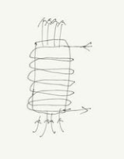
3个线圈通每个线圈方向间隔120度，为了减少硬件电路驱动(H桥)的数量，因此一般是将三个线圈的一端进行相连接，组成了三相星型结构
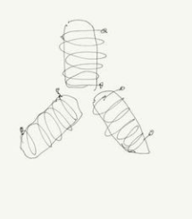
-
H桥驱动电路驱动线圈
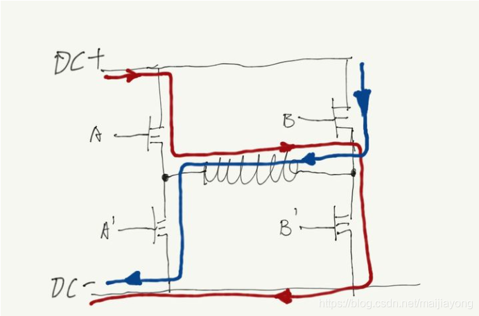
H桥由4个mos管组成，当A和B’打开时，电流从左上方流入线圈(红色箭头方向)，打开B和A’，电流就是蓝色的方向，也就是反向的电流
控制线圈产生的磁场大小，通过控制电压占空比来实现
这里可以使用方波来控制MOS管的导通，如时间周期T，在T/2时间打开A和B’，剩下的T/2关闭A和B’，这样的话就相当于0.5VDC的电压加载到线圈上了(若是T时间均打开 那么线圈上的电压就是VDC)，线圈上的电压可能是0~0.5VDC之间不断的跳动，但是线圈的电流是接近连续的，因为这是电感，如下图，若是电压变动很快并且电感足够大，理论上是可以做到电流连续的
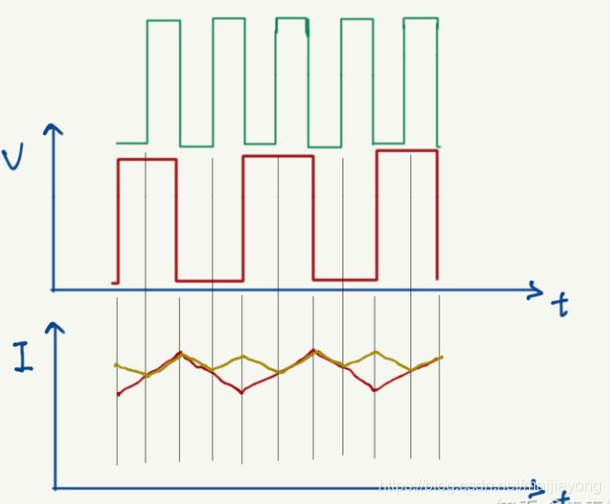
三个线圈连接在一起是为了减少mos管的使用
注意：上面的H桥驱动电路上桥和下桥在同一时间只有一个能打开，两个同时打开会短路，所以在PWM输出时会设置一个保护时段，这个时段上下管都不会有输出
H桥驱三相星链线圈
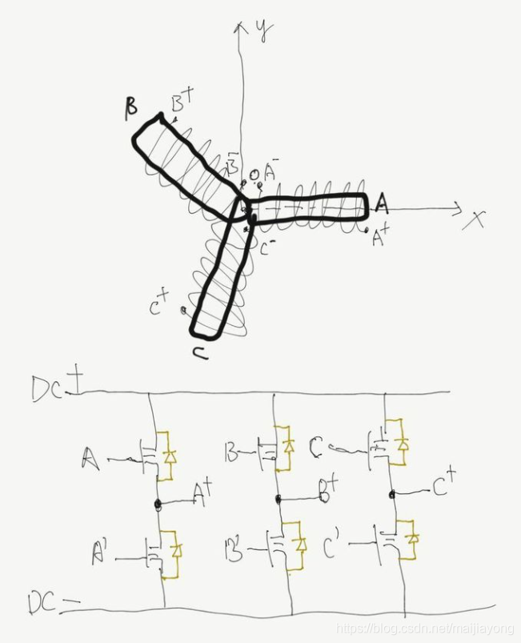
上桥开通下桥关断定义为状态1
上桥关断下桥开通定义为状态0
一共有八种组合方式：000、001、010、011、100、101、110、111
-
三相线圈产生的磁场
0电流状态：在000和111状态上可以看出在这两个状态上时三相线圈是没有电流的，其余6种都会产生电流
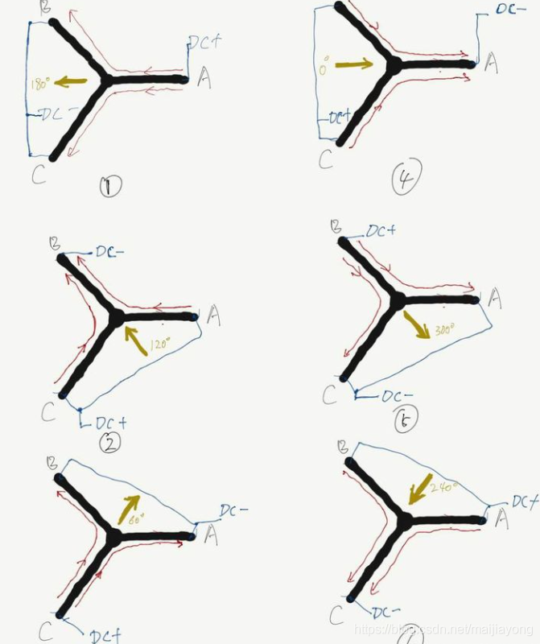
橘色箭头的方向和电磁铁形成磁场方向一致，但是这里我们把橘黄色箭头称呼为电压矢量的方向，因为这里我们加载的是电压方向（1图中A指向B和C）由于是稳态的，所以电流方向也是这个方向，所以磁场方向和橘色箭头一致了<右手螺旋法则>。所以最终产生的磁场方向汇总如下
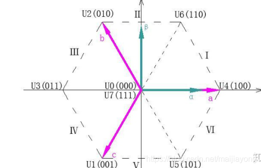
-
电磁场牵引转子最优的状态
当电磁铁的方向和转子(永久磁铁)的方向呈90度的时候，力矩最大。转子会向着电磁铁的方向旋转,此时若转子受到牵引转动了θ角，与此同时电磁铁也按照同方向转动了θ角，那么电磁铁的方向始终和转子的方向垂直，这样转子就会不断的进行旋转了并且力矩始终是最大的
三相线圈只能生成6个方向的电压矢量，通过SVPWM可以根据这六个电压矢量合成任意角度的电压矢量
SVPWM空间矢量脉宽调制
基本思想就是根据上面的六个磁场方向合成任意角度的磁场方向
与FOC的关系：FOC的输出是SVPWM的输入，SVPWM输出是三相电压的占空比，也就是最终设置到计时器中的比较寄存器的值
FOC的输出结果
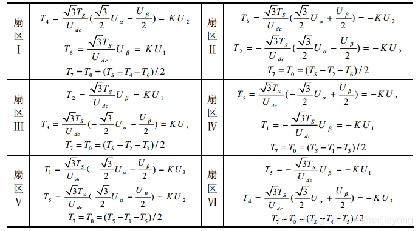
得到FOC的输出结果之后，可以根据该值来判断合成的矢量所在的扇区，然后利用对应扇区的公式计算 Tx, Ty, Tz 的数值然后进行变换之后设置到PWM控制器的比较值中，就可以产生对应的波形，从而产生对应的磁场方向
FOC控制原理
一个三相无刷电机时，当手转动电机然后用示波器观察电机的三根信号线，能够看到输出的是三个相位相差120度的正弦波形，因为电动机反过来就是发电机。因为控制常用的就是闭环控制，而检测正弦波比较困难，那么FOC主要做的工作就是解耦，就是将复杂的信号拆解成比较容易分析的量。
-
FOC控制的结构
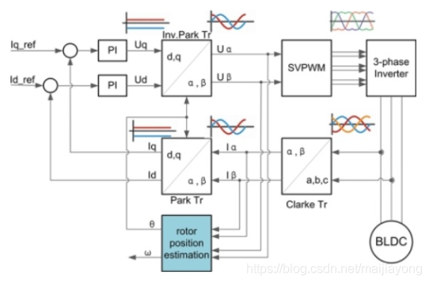
这幅图是以电流闭环控制的
控制器的输入是最左边的Iq_ref和 Id_ref，两个变量经过PID控制器进行反馈调节，其中还涉及到几个变换模块， Park变换和Clark变换；最后通过前面提到的SVPWM模块作用到三相逆变器上进而控制电机；而PID控制器的反馈量，是对电机输出电流的采样值。
控制流程
- 采样得到三相的电流
- 将三相电流经过Clark变换之后得到 $I_\alpha,I_\beta$
- $I_\alpha,I_\beta$ 经过Park变换之后得到 $I_q,I_d$
- 计算 $I_q,I_d$ 和设定值 Iq_ref, Id_ref 之间的误差
- 上述误差使用到PID控制器上，得到输出的控制电压 $U_q, U_d$
- 将其进行反向 Park变换得到 $U_\alpha, U_\beta$
- 再用 $U_\alpha, U_\beta$ 合成电压空间矢量，输入 SVPWM模块 进行调制，输出该时刻三个半桥的状态编码值
- 根据状态码控制三相逆变器的MOS管开关，驱动电机
Clark变换
通过电流的采样，我们得到了三个相位相差120度的正弦波，采集电机前的电流的作用主要是用作PID反馈，以此来调整输入的误差。从上图可以看出，我们只需要采样两个信号线，另一根可以使用基尔霍夫定律得出 $I_a + I_b +I_c = 0$
采集的得到的电流是三个正弦波，直接做PID十分复杂，所以进行转换
Clark变换公式：
$\left\{\begin{matrix} I_\alpha=I_a-cos(\frac{\pi}{3})I_b-cos(\frac{2\pi}{3})I_c \\ I_\beta=sin(\frac{\pi}{3})I_b-sin(\frac{\pi}{3})I_c\end{matrix}\right.$
之后就把三个电流值转化为两个电流值了
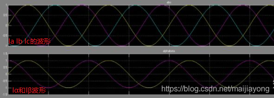
Park变换
上面的Clark变换的输出中得到了 $\alpha-\beta$ 坐标系，将该坐标系旋转 $\theta$ 角度之后得到 Q-D 坐标系
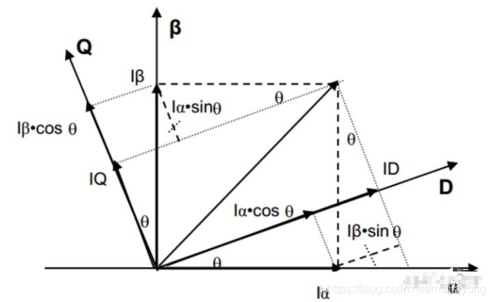
坐标转换公式为
$\left\{\begin{matrix} I_d=I_\alpha cos(\theta)+I_\beta sin(\theta) \\ I_q=-I_\alpha sin(\theta)+I_\beta cos(\theta) \end{matrix}\right.$
Q和D可能很熟悉，那就是分别对应电机的Q轴(交轴)和D轴(直轴)，θ就是转子转动的角度，也就是d-q坐标系是始终随着转子进行转动的
这个操作是可行的，因为我们会通过编码器输入转子的实时旋转角度，所以这个角度始终是一个已知数。经过这一步的变换，我们会发现，一个匀速旋转向量在这个坐标系下变成了一个定值！（因为参考系相对于该向量静止了，Id和Iq相对于D-Q坐标系），这个坐标系下两个控制变量都被线性化了！
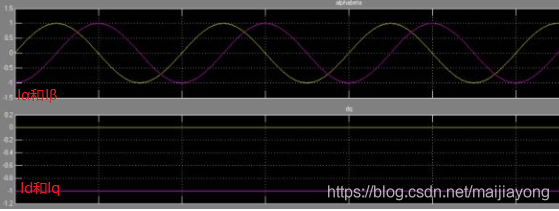
PID控制
FOC控制中主要使用三个PID环，电流环，速度环，位置环
其实就是，通过电流反馈控制电流，通过控制扭矩控制转速，再通过控制转速控制电机位置
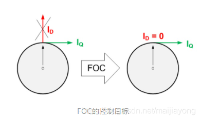
clack变换和pack变换最后输出的Iq和Id的值，也就是主要对采样的正弦电流进行解耦，分解成径向和切向这两个方向的变量。 $I_q$ 是期望的力矩输出， $I_d$ 是我们不需要的，应该是径向力矩输出。 由上图可以知道经过FOC的控制目标就是将Id的电流尽量减小到0，因为其对电机的转向是没有任何帮助的所以我们尽量让其控制到0
电流环：
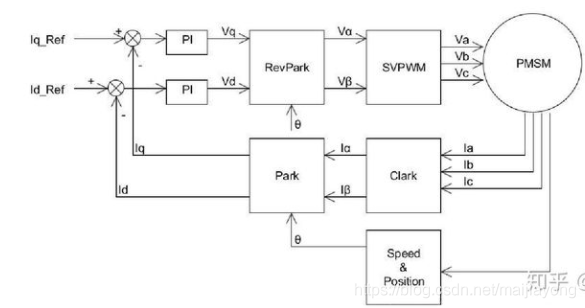
速度环：w是电机的转速反馈，可以通过电机编码器或者霍尔传感器等计算得到，依然是使用PI控制
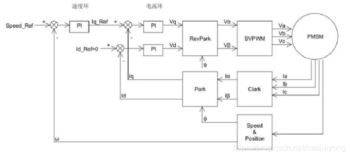
位置环：
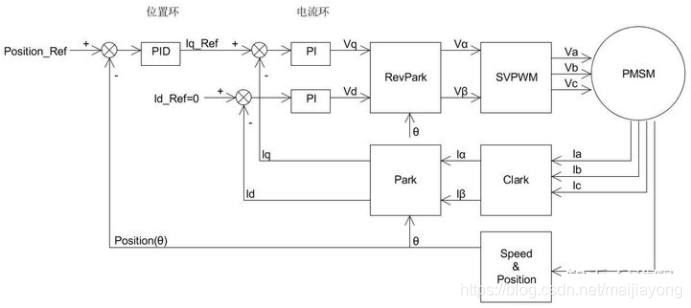
这个位置环去掉了速度环，所以使用的是完整的 PID 控制 ，把微分项加上了，微分项就是速度信息，这样可以减小位置控制的震荡加快收敛，积分项消除静态误差